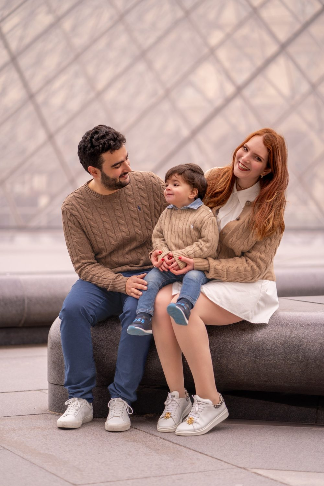
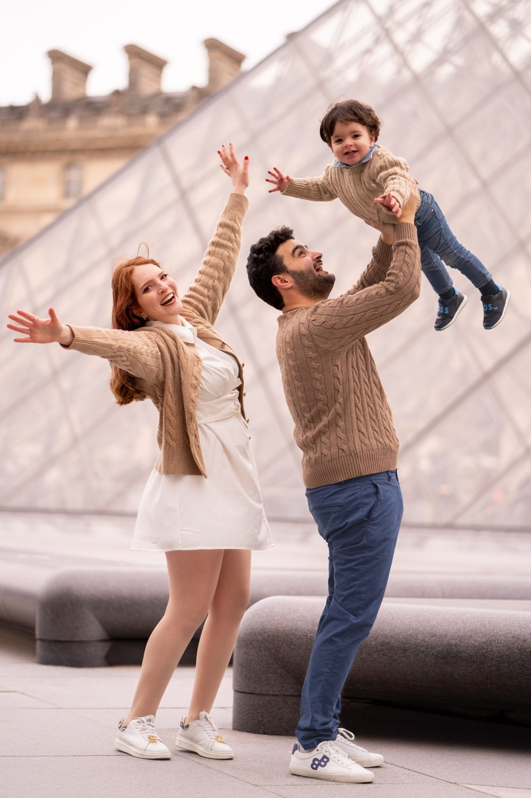
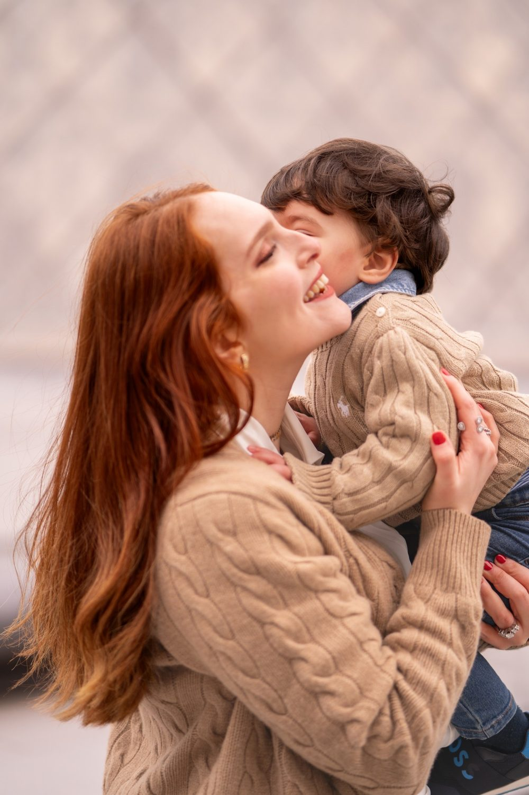
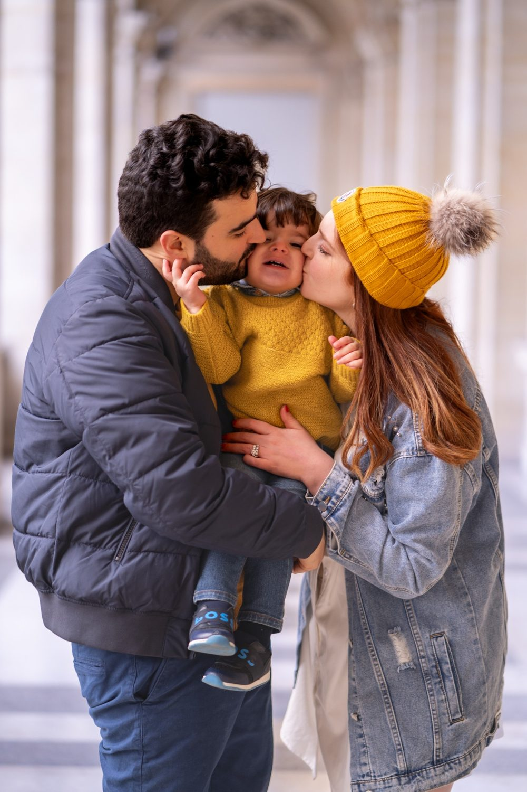

Séance photo famille à Joinville-le-Pont
Détendu, au bord de l'eau, avec des îles. Les enfants grandissent, les grands-parents prennent de l'âge. Une séance famille arrête le temps, sans jamais se prendre au sérieux. Nous vous proposons de commencer à Parc du Parangon, puis de poursuivre à Quartier de Polangis.

Où faire votre shooting
À Joinville-le-Pont, une séance photo famille laisse les enfants mener la danse, entre le Parc du Parangon et les Bords de Marne. Courir, ramasser des feuilles, regarder passer l'eau : rien n'est imposé. Le Parc du Parangon sert de terrain de jeu ombragé, avec des courses entre les arbres et des câlins sur l'herbe. Sur les Bords de Marne, les grands-parents tiennent les petites mains pendant la promenade. Nous finissons dans le Quartier de Polangis, devant un jardin, pour un portrait de groupe et une séquence filmée de tout le monde qui s'éloigne.
Sur place
Détendu, au bord de l'eau, avec des îles. La Marne est calme en début de matinée.
Les générations sont à l'honneur : un portrait de groupe, un portrait par branche, un moment seul à seul avec chaque enfant. La vidéo peut enregistrer une petite interview, la voix des enfants à un âge donné.
Venez en RER A jusqu'à la gare de Joinville-le-Pont si vous préférez éviter de chercher où vous garer avec poussette et sacs. Commencez par le Parc du Parangon, où l'ombre garde les enfants de bonne humeur.
À Joinville-le-Pont, vous êtes à RER A Joinville-le-Pont : nous préparons l'itinéraire entre les lieux avec vous.
Nos lieux pour cette séance
Parc du Parangon
Parc ombragé. Un parc où les enfants peuvent courir sans contrainte pendant que nous photographions.
Quartier de Polangis
Pavillons et jardins. Des rues et des places pour des portraits de famille au naturel, entre promenade et sortie.
Île Fanac
Île boisée sur la Marne.
Bords de Marne
Promenade et pontons.




Avant de nous écrire
Où faire une séance photo famille à Joinville-le-Pont ?
Une séance photo famille à Joinville-le-Pont se déroule bien au Parc du Parangon, parc ombragé où les enfants jouent librement, puis sur les Bords de Marne pour une promenade le long de l'eau avec parents et grands-parents.
Une séance famille à Joinville-le-Pont convient-elle aux jeunes enfants ?
La séance famille à Joinville-le-Pont s'adapte aux jeunes enfants. Le Parc du Parangon offre de l'ombre et de l'espace pour courir, et nous prévoyons des pauses selon le rythme des plus petits.
Comment venir à Joinville-le-Pont ?
RER A Joinville-le-Pont. Nous nous déplaçons avec notre matériel photo et vidéo.
La séance est-elle possible à la maison ?
Oui, c'est souvent le plus simple avec de jeunes enfants. Nous cherchons la meilleure fenêtre de lumière.
Parlons de votre mariage
Demander un devisFamille ailleurs en Île-de-France
© Le Couple Photographe · Photographe de mariage Paris & Île-de-France · Mis à jour le 10 octobre 2026
Demander un devis